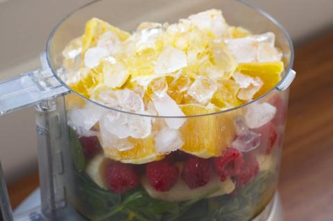

Power-up Smoothie
10 min
261 cal
This delicious beverage will get you off on the right foot and ready to rock the day. Spinach gives the drink lots of vitamins and a bright green color while oranges and berries take center stage for the flavor.